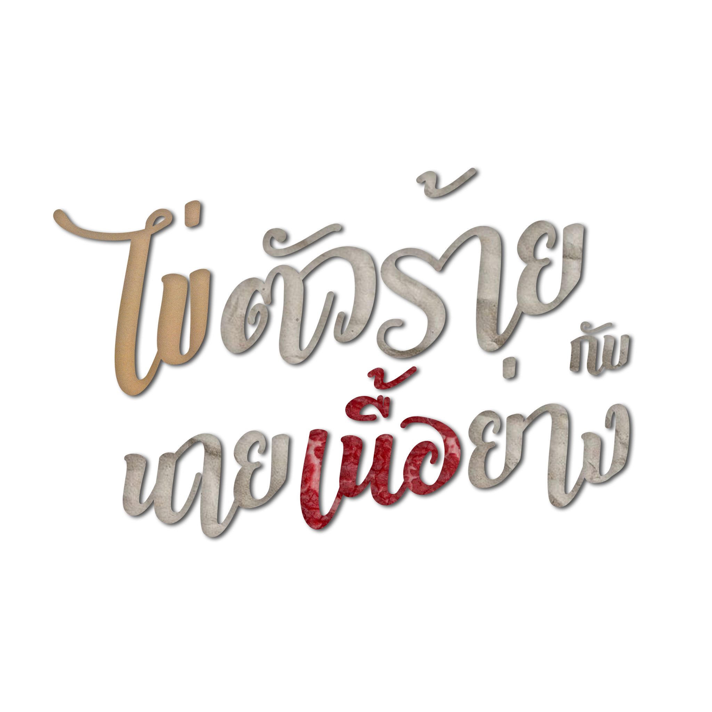
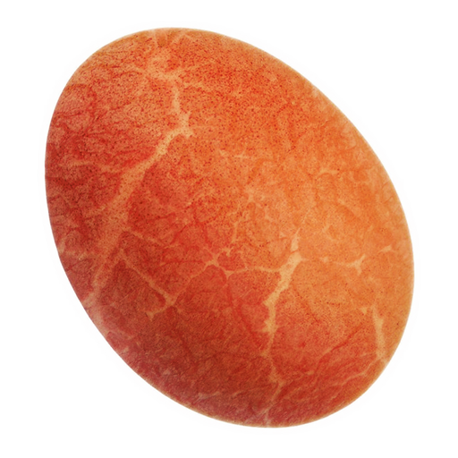

เพื่อการแสดงผลเว็บไซต์ที่ดีที่สุด
กรุณาเข้าด้วยคอมพิวเตอร์หรือแท็บเล็ต
* ข้อมูลบางส่วนอาจไม่แสดงผล *

* ข้อมูลบางส่วนอาจไม่แสดงผล *
ไข่ตัวร้ายกับนายเนื้อย่าง เป็นผลงานของนักศึกษาจากคณะเทคโนโลยีสารสนเทศ สถาบันเทคโนโลยีพระจอมเกล้าเจ้าคุณทหารลาดกระบัง ซึ่งเป็นโครงงานในวิชา Computer Programming รหัสวิชา 06016315
เกม "ไข่ตัวร้ายกับนายเนื้อย่าง" เป็นเกมที่สร้างขึ้นมาเลียนแบบเกม Beff Grill (焼き肉亭) และเกม The Amazing Dare-Dozen โดยทั้งสองเกมต้นฉบับสร้างขึ้นมาด้วย Flash และต้องเล่นผ่านเว็บไซต์ผ่านโปรแกรม Flash Player ซึ่งกำลังจะหมดการสนับสนุนในบราวเซอร์ใหม่ ๆ ในเร็ววันนี้ ทางผู้จัดทำจึงตัดสินใจทำเกมเลียนแบบขึ้นมาโดยเขียนด้วยภาษา C ที่สามารถเล่นได้บนระบบปฏิบัติการ Windows ได้อยู่ตลอด และยังสามารถแปลง Source code ของเรา ไปบนแพลตฟอร์มอื่นได้ด้วยเช่น Mac OS และ Android เนื่องจากทางผู้จัดทำได้พัฒนาเกมโดยใช้ Libary "Raylib"
ภายในเกม "ไข่ตัวร้ายกับนายเนื้อย่าง" จะมีเกมย่อย 2 เกมได้แก่ "ไข่ตัวร้าย" และ "นายเนื้อย่าง" โดยสามารถเลือกที่จะเล่นได้ทันทีที่เปิดเกม
ไข่ตัวร้าย ผู้เล่นจะได้บังคับไข่ฟองหนึ่งที่ต้องกระโดดไปตามตะกร้าที่อยู่สูงขึ้นไปเรื่อยๆ ด้วยเหตุผลบางอย่าง ผู้เล่นจะต้องขึ้นไปให้ถึง ชั้นที่ 145 โดยจะมีชีวิตทั้งหมด 12 ชีวิต โดยเมื่อผู้เล่นกระโดดพลาดตกจากตะกร้าจะถูกหัก 1 ชีวิตและเมื่อชีวิตหมดจะถือว่าเกมจบและสรุปคะแนนที่ได้รับ และระหว่างทางจะมีข้อความ ภายในเกมให้อ่านเพื่อทราบรายละเอียดบางอย่างเกี่ยวกับเกมนี้? เนื้อเรื่องอย่างนั้นเหรอ?
นายเนื้อย่าง เมื่อเริ่มเกมผู้เล่นจะมีเวลา 120 วินาทีและแต้มชีวิต 100% ในการเล่น ผู้เล่นจะต้องนำเนื้อภายในจานไปย่าง และเมื่อเนื้อสุกจะต้องนำเนื้อใส่ถ้วยน้ำจิ้มเพื่อรับประทาน โดยในแต่ละวินาที เวลาจะนับถอยลังลง และในทุกๆ 2 วินาที แต้มเลือดของผู้เล่นจะลดลง 2 หน่วย และเมื่อเวลา หรือแต้มเลือดหมดจะถือว่าเกมจบทันทีแล้วสรุปคะแนนที่ได้รับ โดยผู้เล่นจะได้รับแต้มเลือดเพิ่มเมื่อทานเนื้อที่ย่างอย่างพอดี แต่จะถูกหักแต้มหากเนื้อไม่สามารถทานได้ เช่น ดิบ หรือไหม้เกินไปและเมื่อเนื้อภายในจานหมดเกมจะนำเนื้อมาเสิร์ฟเพิ่มให้, เพิ่มเวลาในการเล่น 40 วินาที และ เพิ่มคะแนนโบนัส 200 คะแนนในทุก ๆ ครั้งที่นำเนื้อมาเสิร์ฟใหม่! "อยากรู้จังว่ากินเท่าไหร่จึงจะอิ่ม"
โดยผู้จัดทำเปิดโค้ดต้นฉบับ (Source Code) เป็นสารธารณะ และอนุญาตให้สามารถนำไปพัฒนาต่อได้โดย แต่ต้องไม่นำไปใช้งานเชิงพาณิชย์ Github
* แนะนำให้ใช้ Compiler จากทางผู้พัฒนา Raylib โดยตรง เพื่อไม่ให้เกิดปัญหาในการแปลงรหัสต้นฉบับ
> Bin /* โฟลเดอร์เกม */คำอธิบายเบื้อต้นสำหรับรหัสต้นฉบับเกม ไข่ตัวร้ายกับนายเนื้อย่าง
> src
ตำแหน่ง
อาจารย์ที่ปรึกษา
ตำแหน่ง
อาจารย์ที่ปรึกษา